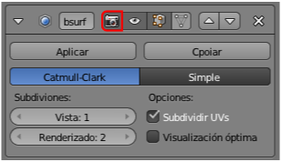

Actividades
1- Gana soltura con el cambio de "Centro de pivotaje"
Saca a escena unas cuantas primitivas y por en práctica todo lo aprendido sobre el centro de pivotaje
2- Aprende nuevos atajos
- Usa el atajo de teclado "Z" para alternar entre sombreado Sólido y Alambre. Verás que es realmente útil porque estos son los sombreados más utilizados.
- Aunque menos utilizado, también puedes poner en práctica el atajo "Alt_Z" para alternan Sólido con Textura.
3- Compara resultados con sombreado Suave
Aplica el sombreado Suave a diferentes primitivas y comprueba cómo mejora su aspecto. Verás que en algunos casos como el cubo o el cilindro esta técnica no da muy buenos resultados por tener angulaciones de 90º (demasiado cerradas).
4- Una nueva opción para Subdivisión
Comprueba cómo es posible tener activada la Subdivisión en Vista 3D y evitar que salga en el render desactivando el icono que se indica en esta imagen.
5- Aplica Subdivisión y analiza
Asigna este modificador a un cubo (Añadir/Malla/Cubo) y piensa sobre lo que ocurre.
6- Investiga con la luz
- Crea una escena sencilla y trata de hacer iluminaciones duras y suaves variando tan solo el valor del parámetro Tamaño de suavizado mientras que Muestras se mantiene fijo en 6.
- Comprueba cómo afecta al tiempo de render cuando tratas de disminuir la sensación de ruido en al Oclusión ambiental.
7- ¿Se escala la cámara desde su punto de vista?
Comprueba cómo desde "Numpad 0", y la cámara seleccionada, no se aprecia la edición escalar ("S"). Luego regresa a Vista 3D para ver la cámara y comprueba que sí se ha realizado la transformación. Saca conclusiones.
8- Gana destreza con el encuadre
Crea una escena sencilla y haz varios rendes desde el mismo punto de vista "NumPad 0" pero que surjan de controlar el encuadre. Practica especialmente el acercamiento y alejamiento de la cámara.
9- Practica esta selección...
Crea una escena compleja con una buena cantidad de primitivas y comprueba que Blender te ofrece un cuadro con las opciones disponibles al hacer clic derecho y mantener pulsada la tecla "Alt". Verás lo complicado que resulta tomar una decisión si los objetos no han sido nombrados adecuadamente.
10- Profundiza en las primitivas
Investiga la geometría interna desde Modo Edición  en todas las primitivas que ofrece Blender.
en todas las primitivas que ofrece Blender.